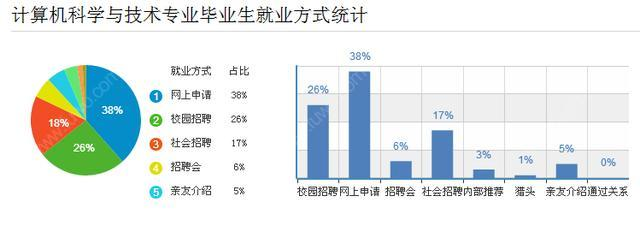

计算机科学与技术(2017级 蒋太武)
随着我国现代科技的不断发展，计算机科学技术也取得了长足的进步。近年来，该技术不断发展成熟并运用到多个不同的领域，在一定程度上影响着人们的学习效率和生活质量。因此，对于计算机科学技术的研究现状进行分析，并结合我国当下情况，做出一定的前景展望对于我国科技行业的发展具有深远意义。
近年来，计算机科学技术取得了长足的进步，并在 21 世纪初得到了飞速的发展。计算机也由最初的大体积，高耗能的大型机器逐渐转换为便携小巧的机器。随着科技的不断进步，人们对于生活质量的要求也不断提高，这也给当下计算机科学技术的发展其一定的导向作用，为科学技术的进步带来了更多的机遇和挑战。
目前，计算机科学技术已经逐渐成为我国生活的一部分。无论是每天接触的广播电视、和远距离的亲人可视化聊天还是手机叫餐等多种服务，计算机科学技术都在影响着我们的日常生活。可以看出，计算机技术可以为人们提供快速便捷的服务、简易清晰的交流，还能最大限度地节约时间。
一年前这个时候我就因为表面喜欢计算机而选择了这个专业，进去后才知道程序员不只是简单修电脑、装系统的，得学的东西很多（建议查找相关专业四年的课程内容参考），基于落后的基础且失去了兴趣，学得特别吃力。经过不断的摸索，一年后的现在才发现自己的确喜欢IT，只不过对自己定位不准确，迷失了方向。至此，建立起的兴趣和热情，足以让自己坚持下去。

360行，行行出状元，计算机网络 细分领域很多，只要主动钻研、精益求精、真才实学，一定可以有好结果的。